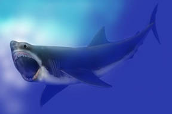
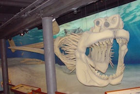

Since this creature was alive before it could be recorded, there is no definitve intepretation of what it looked like. One intepretation (and without a doubt the most popular one) is that it was a robust-looking shark and closely resembles the great white shark. Key differences with this specific interpretation, however, are a wider and blunter jaw, thicker fins, and smaller eyes. Another, less popular interpretation is that it closely resembles the whale shark or basking shark. Key features in this interpretation include a crescent shaped tail fin, a small anal and second dorsal fin, and a caudal keel on both sides of the tail fin. This build is consistent with marine animals of this size to reduce drag while swimming. The size of the megalodon is a topic that is subject to disagreement. Some scientists assert that its maximum size could be as small as 43 feet to as large as 82 feet. While there is no one correct estimate, the commonly accepted estimate today is that it's maximum length was at about 60 feet (and its average size being 34 feet). Its estimated that a mature male megalodons could have a mass of 12.6 to 33.9 metric tons, while mature female megalodons could have a mass of 27.4 to 59.4 metric tons.